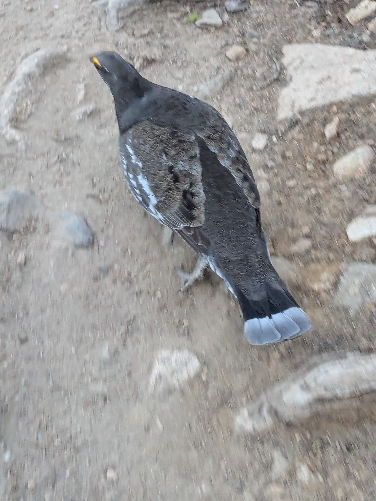
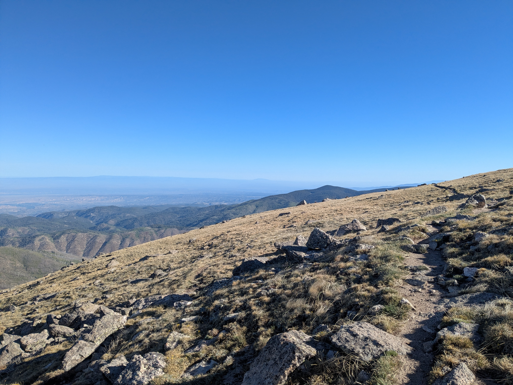
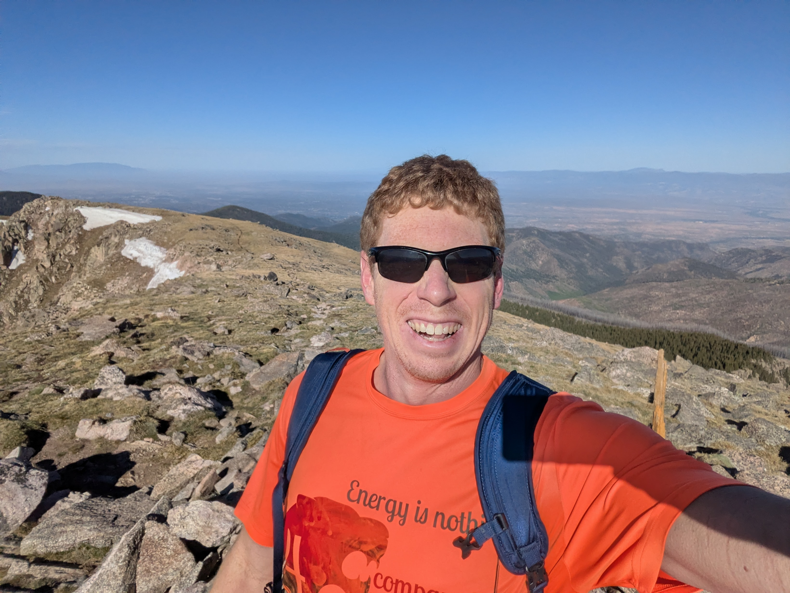
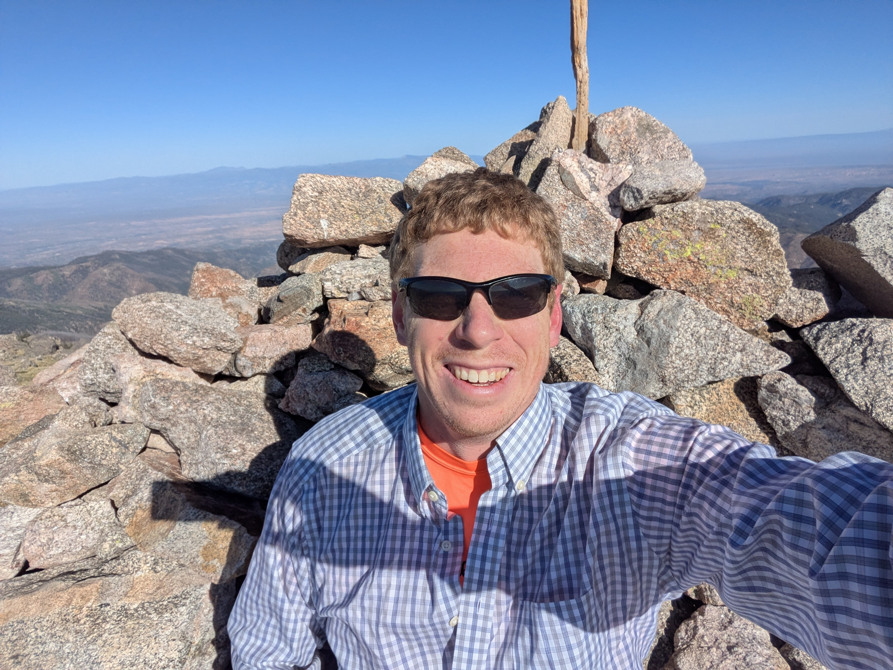
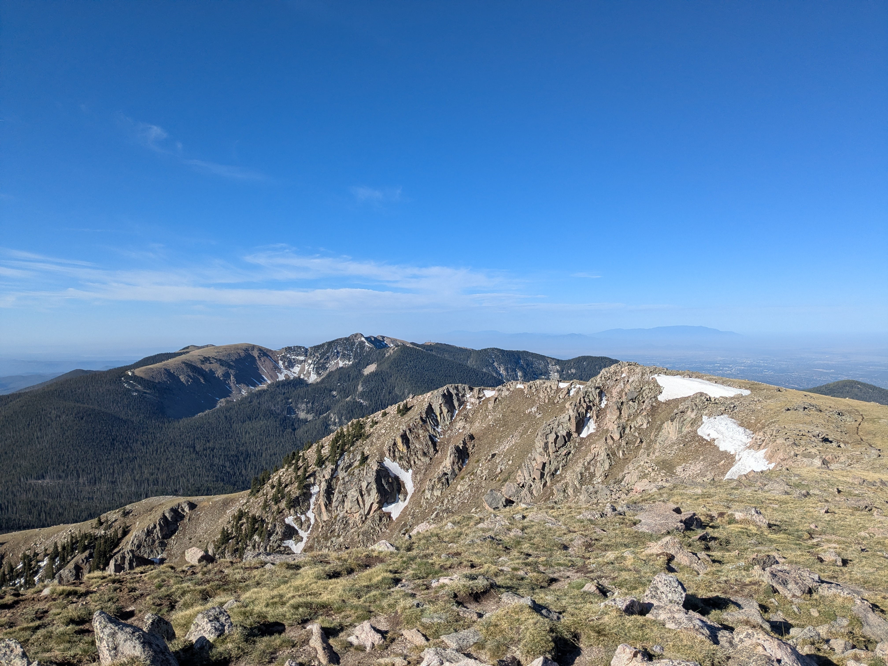

I fly into Albuquerque a lot. Whenever I can bear to be outdoors, the mountains always look so appealing, but I invariably end up stuck in meetings all day and then need to run right to the airport to get home. With the flights out of ABQ it’s really hard to do a half day objective without burning an entire day. Which I am (technically) allowed to do, but there’s always something pressing that I need to get home for (e.g., staying married).
I was in Santa Fe this time, with plans for a half day of meetings on my final day, followed by a mad dash to ABQ to make it on a 2pm flight. Magically the third day of my meeting was cancelled—an opportunity. A natural choice would be the Sandia Crest, but the logistics of that would require me to go straight from the crest to my flight, and I had no plans of finding out whether United will kick someone off a plane for being too smelly. Some research and I settled on Santa Fe Baldy. It is a natural objective from Santa Fe, starting from a trailhead at the Santa Fe Ski Basin.
My plan was to get an early start, tag the summit, tag Lake Peak if time permitted, and get back to my hotel to shower while I still had the room, and then haul ass to the worst place in the world: ABQ Skyport Rental Car Center. The no-host social the previous night ended up dragging on longer than expected (my mistake was going to “one more bar” with the British visitors), and so I got a bit of a late and somewhat groggy start. Just like being back in my mid-20’s! I had not planned on having extra time to hike, and so my gear setup was not ideal.
I had hiking pants, a running shirt, and my large Cotopaxi backpack suitcase filled with a few bottles of Gatorade, some snacks I had scrounged from the meeting refreshments, and my warmth later (i.e., my dress shirt from the previous day). Onwards!
I powerhiked the uphills and jogged the downhills as I worked my way up and over the first pass and into the backcountry. The trail was not rough per se, but not exactly amenable to running, and I had a few close calls.

The final 1000’ climb from the saddle diverges from the main trail and steeply ascends a ridge line with a few moves of class 2, before a long traverse to the summit.

Boy was I missing my trekking poles! The 12,632’ summit was still below freezing in the early morning light and I was grateful I had packed that long sleeve dress shirt, although it wasn’t doing much as I sat at the summit. I kept the shirt on for much of the steep descent, as the trail was limiting my speed and therefore my heat generation.


The ascent and descent of the last 1000’ was on tricky enough terrain that I was getting behind schedule, and so I cut out my planned link up with Lake Peak on the way back and simply retraced my steps. As I gradually got closer to Lake Peak, I began to regret not making it up—the summit and ridgeline looked to have some nice exposure that would make for a really cool ascent, but the extra 1200 ft and 4 miles was going to put me in serious danger of missing my flight.

I was soon happier with that decision as soon as the trail bottomed out and began the climb back up to the first saddle. The last 4 miles HURT. Which is fair, because I had not done much running lately.
I made it back to the car 9 minutes behind my self-imposed 10am cutoff for a 4:08 round trip. Another 45 minutes back to my hotel room, 30 minutes to shower and pack up, 75-minute drive to the rental car lot, the requisite 30 minutes of shuttle bus shenanigans, and I made it a whole hour before my flight! Maybe I could have managed Lake Peak after all.